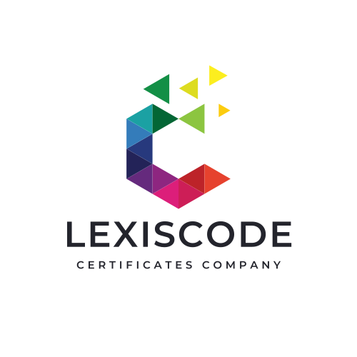

 Sobre Nosotros
LexisCode: Definiendo la Maestría en el Desarrollo de Software.
Vivimos en un mundo donde la habilidad técnica define el futuro. Sin embargo, demostrar esa habilidad de forma objetiva siempre ha sido un desafío. Un portafolio es subjetivo y una entrevista no siempre es suficiente.
LexisCode nació de esta necesidad: la necesidad de un estándar confiable para medir la fluidez real en un lenguaje de programación.
Nuestra Misión
Nuestra misión es validar objetivamente la competencia técnica de los desarrolladores de software. Creamos un estándar industrial confiable que permite a los programadores probar su maestría y a las empresas, construir equipos de élite con total confianza.
Nuestra Visión
Ser la autoridad global y el estándar de oro en la certificación de lenguajes de programación. Aspiramos a un futuro donde la habilidad de un desarrollador sea verificable, portátil y universalmente reconocida, cerrando la brecha entre el talento y la oportunidad.
¿Por Qué LexisCode?
El verdadero "léxico" de un desarrollador no está en su currículum; está en la calidad de su código.
A diferencia de las pruebas teóricas tradicionales, nuestros exámenes están diseñados por expertos veteranos de la industria y se centran en la resolución de problemas prácticos y del mundo real. No solo preguntamos si conoces la sintaxis; te desafiamos a aplicarla de manera eficiente, limpia y robusta.
Cuando un desarrollador aprueba un examen de LexisCode, no solo obtiene un certificado. Obtiene una prueba irrefutable de su excelencia técnica.
Nuestros Valores
Excelencia: Nos obsesionamos con la calidad, precisión y relevancia de cada pregunta en nuestros exámenes.
Integridad: Garantizamos un proceso de evaluación justo, objetivo e imparcial. La confianza es nuestro mayor activo.
Relevancia: Mantenemos nuestros exámenes alineados con las demandas y tecnologías más actuales de la industria del software.
Valida tu Habilidad
¿Estás listo para demostrar tu maestría y unirte a la élite de los desarrolladores certificados?